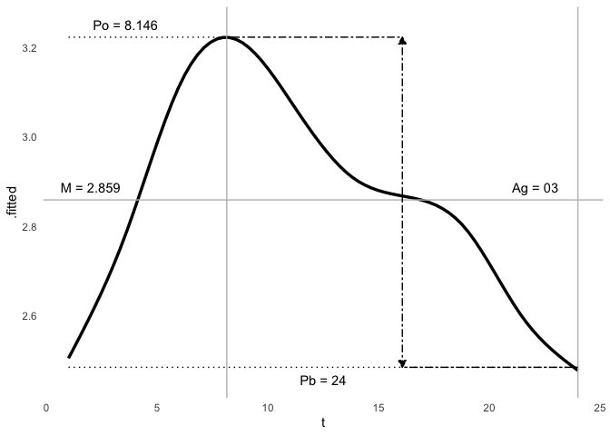

card
Source:readme.md


Cardiovascular Applications for Research Data
The inspiration for card was to create useful functions and analytical approaches in computational neurocardiology, with a on electrocardiography and epidemiology.
The areas of focus of this package are the following:
- handling of recurrent and circadian events
- epidemiological focus on effective model building
Installation
You can install the released version of card from CRAN with:
install.packages("card")And the development version from GitHub with:
# install.packages("devtools")
devtools::install_github("shah-in-boots/card")Usage
The intent for this card is to develop several key functions for the analysis of recurrent or cyclical data, and assistance with epidemiological approaches to regression modeling.
The key features are:
- Sample datasets
- Cosinor analysis
- Recurrent events
- Model building
Datasets
- Cardiovascular disease outcomes with recurrent events
- Vectorcardiography data in a high-risk cohort
- Continuous electrocardiography recordings in a clinical cohort with quantitative stress data
# ECG data
data("twins")
head(twins)
#> # A tibble: 6 × 23
#> # Groups: patid, hour [6]
#> patid age bmi race smoking hptn dm chf prevchd med_beta_blockers
#> <dbl> <dbl> <dbl> <fct> <fct> <fct> <fct> <fct> <fct> <fct>
#> 1 1 49 27.4 0 1 1 0 0 0 0
#> 2 1 49 27.4 0 1 1 0 0 0 0
#> 3 1 49 27.4 0 1 1 0 0 0 0
#> 4 1 49 27.4 0 1 1 0 0 0 0
#> 5 1 49 27.4 0 1 1 0 0 0 0
#> 6 1 49 27.4 0 1 1 0 0 0 0
#> # ℹ 13 more variables: med_antidepr <fct>, beck_total <dbl>, sad_bin <fct>,
#> # sad_cat <fct>, PETdiff_2 <fct>, dyxtime <dttm>, date <date>, hour <dbl>,
#> # rDYX <dbl>, sDYX <dbl>, HR <dbl>, CP <dbl>, zip <chr>
# Outcomes data
data("stress")
head(stress)
#> # A tibble: 6 × 11
#> id start stop head_ache_date_1 head_ache_date_2 head_ache_date_3
#> <dbl> <date> <date> <date> <date> <date>
#> 1 123 2014-08-26 2016-12-08 2016-12-08 NA NA
#> 2 117 2014-08-12 2016-10-30 2016-10-30 NA NA
#> 3 145 2014-10-22 2016-07-31 2016-06-01 2016-07-31 NA
#> 4 144 2014-10-21 2017-03-24 2015-02-12 NA NA
#> 5 204 2015-03-16 2015-04-03 NA NA NA
#> 6 283 2015-10-12 2016-01-19 NA NA NA
#> # ℹ 5 more variables: heart_ache_date_1 <date>, heart_ache_date_2 <date>,
#> # heart_ache_date_3 <date>, death <dbl>, broken_heart <dbl>
# VCG data
data("geh")
head(geh)
#> # A tibble: 6 × 70
#> pid hhp_id age sex age_cat systolic_bp_first systolic_bp_second
#> <dbl> <dbl> <dbl> <fct> <fct> <dbl> <dbl>
#> 1 200481 220946 42 0 0 162 165
#> 2 200489 224643 62 1 1 133 128
#> 3 200495 224845 84 0 2 100 99
#> 4 200052 222917 65 0 2 139 141
#> 5 200517 220638 64 1 1 166 163
#> 6 200623 224862 57 0 1 151 144
#> # ℹ 63 more variables: systolic_bp_third <dbl>, diastolic_bp_first <dbl>,
#> # diastolic_bp_second <dbl>, diastolic_bp_third <dbl>,
#> # pulse_rate_first <dbl>, pulse_rate_second <dbl>, height_cm <dbl>,
#> # weight_kg <dbl>, waist_cm <dbl>, dia_trt_allopdrug <hvn_lbll>,
#> # hbp_trt_allopdrug <hvn_lbll>, hyp_trt_allopdrug <hvn_lbll>,
#> # lab_hba1c <dbl>, lab_fasting_bg <dbl>, lab_fasting_insulin <dbl>,
#> # lab_tchol <dbl>, lab_ldlchol <dbl>, lab_hdlchol <dbl>, lab_triglyc <dbl>, …Cosinor Analysis
This modeling algorithm requires only base R, which allows internal flexibility for modeling heuristics and improved efficiency. For the user, it also allows standard modeling tools/approaches, and a flexible user interface that accounts for individual/population analysis and single/multiple component analysis.
There are other cosinor models available in R, however they do not allow for simple multiple-component or individual/population analysis in a method that is tidy (for both tidyverse and tidymodels approaches).
m <- cosinor(rDYX ~ hour, twins, tau = c(24, 12))
summary(m)
#> Individual Cosinor Model
#> ------------------------------------------
#> Call:
#> cosinor(formula = rDYX ~ M + A1 * cos(2*pi*hour/24 + phi1) + A2 * cos(2*pi*hour/12 + phi2)
#>
#> Period(s): 24, 12
#>
#> Residuals:
#> Min. 1st Qu. Median Mean 3rd Qu. Max.
#> -3.00770 -0.52024 -0.03247 0.00000 0.48753 4.88552
#>
#> Coefficients:
#> Estimate Std. Error
#> mesor 2.8586510 0.006062639
#> amp1 0.2964114 0.008702368
#> amp2 0.1302012 0.008542526
#> phi1 -2.6542757 0.028911445
#> phi2 -3.6636921 0.065235427
ggcosinor(m)
#> This is a harmonic multiple-component cosinor object. The orthophase, bathyphase, and global amplitude were calculated.
#> Warning in regularize.values(x, y, ties, missing(ties)): collapsing to unique
#> 'x' values
#> `geom_smooth()` using formula = 'y ~ s(x, bs = "cs")'
head(augment(m))
#> # A tibble: 6 × 8
#> y t x1 x2 z1 z2 .fitted .resid
#> <dbl> <dbl> <dbl> <dbl> <dbl> <dbl> <dbl> <dbl>
#> 1 2.63 8 -0.5 -5.00e- 1 8.66e- 1 -8.66e- 1 3.22 -0.592
#> 2 2.42 9 -0.707 -1.84e-16 7.07e- 1 -1 e+ 0 3.21 -0.787
#> 3 1.81 10 -0.866 5 e- 1 5 e- 1 -8.66e- 1 3.15 -1.34
#> 4 2.01 11 -0.966 8.66e- 1 2.59e- 1 -5.00e- 1 3.08 -1.07
#> 5 1.63 12 -1 1 e+ 0 1.22e-16 -2.45e-16 3.01 -1.38
#> 6 1.95 13 -0.966 8.66e- 1 -2.59e- 1 5 e- 1 2.95 -0.996